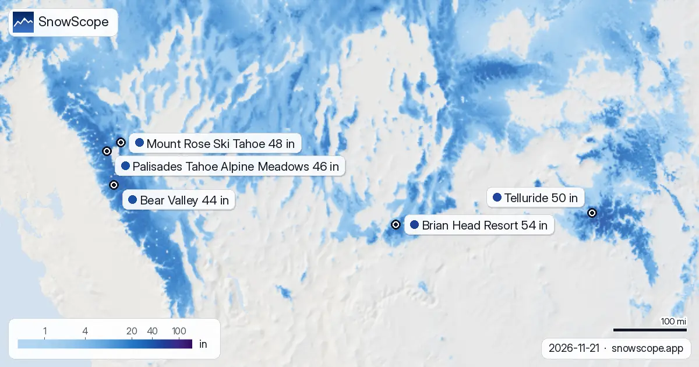
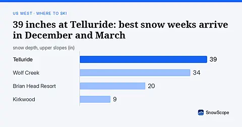

Telluride ski resort right now: snow depth 50 in (US West, 21 November)
On 21 November, Telluride sits with 50 in (127 cm) of snow on its upper slopes, solid for mid-November but behind Brian Head Resort's 54 in (138 cm). The US West had snow across 435,000 sq mi (1.1 million km²) on this date, with 183 of 193 resorts holding snow on their upper slopes.
See the live snow forecast for Telluride in the SnowScope appSnow depth, powder alerts and the 3D map, free.
How Telluride's depth stacks up
Telluride's 50 in (127 cm) puts it second in the region today, after Brian Head Resort. Mount Rose Ski Tahoe has 48 in (121 cm), Palisades Tahoe Alpine Meadows 46 in (116 cm), and Bear Valley 44 in (111 cm).
The upper slopes at Telluride sit well above the typical 21 November: usually 12 in (30 cm) falls by this date. This year, 23 in (58 cm) is stored at 10,620 ft (3,237 m), more snow than 31 of the past 46 winters brought to this height by now.
| Resort | Snow depth | New snow, 72 h | Coming, next days | Top |
|---|---|---|---|---|
| Brian Head Resort | 54 in (138 cm) | 7 in (17 cm) | 0 in (0 cm) | 10,909 ft (3,325 m) |
| Telluride | 50 in (127 cm) | 5 in (12 cm) | 4 in (10 cm) | 12,507 ft (3,812 m) |
| Mount Rose Ski Tahoe | 48 in (121 cm) | 19 in (47 cm) | 2 in (4 cm) | 9,567 ft (2,916 m) |
| Palisades Tahoe Alpine Meadows | 46 in (116 cm) | 20 in (51 cm) | 2 in (6 cm) | 8,494 ft (2,589 m) |
| Bear Valley | 44 in (111 cm) | 24 in (60 cm) | 2 in (4 cm) | 8,484 ft (2,586 m) |

Snow at each height
Telluride spreads its snow across three zones. At the base (8,734 ft / 2,662 m) only 4 in (11 cm) lies on the ground. The mid-mountain (10,620 ft / 3,237 m) holds 17 in (42 cm). The top (12,507 ft / 3,812 m) has 46 in (120 cm).
The gap between base and summit is steep: snow at the base is thin for skiing, but the high terrain is already skiable in protected areas. The difference matters for the next week: the forecast adds up to 4 in (10 cm) across the resort, with more reaching the top elevations than the base.
What the next week brings
By 24 November, Telluride will gain around 4 in (10 cm) across the forecast window. The pattern shows 4 in (10 cm) on 21 November (already measured), then no fresh snow on 22 November, 2 in (6 cm) on 23 November, and 1 in (4 cm) on 24 November.
The freezing level on 22 November ranges from 5,282 ft (1,610 m) to 10,302 ft (3,140 m), so any new snow will add to the base and mid-mountain pack without melting off. By late in the week the forecast becomes less certain, so check the map again before you travel.
Measured snow nearby
The Alta Lakes station (11,284 ft / 3,441 m), about 2 miles (3.5 km) from Telluride, recorded 23 in (58 cm) on 19 November with no new snow in the 24 hours before that reading. Ground measurements carry their own uncertainty and reflect one point, not an average across the mountain.
The Lost Lakes station (8,638 ft / 2,633 m) measured 46 in (117 cm) on 19 November with 10 in (25 cm) falling in the previous 24 hours. These readings confirm that snow fell earlier in the week and has been settling since.
Early season notes
November snow is often light and settles quickly. What looks deep at 54 in (138 cm) may be less dense than the same depth would be in January. Check the SnowScope map again closer to your travel date: forecasts beyond a few days can shift.
In past winters, Telluride's best snow volumes usually arrived in early January or early March, so this November base is an early bonus. Lower runs still wait for deeper cover; the upper slopes are where November snow matters most.
Tips for skiers
- Stick to open, groomed terrain: early-season snow can be thin, and rocks or grass may hide just beneath the surface.
- North-facing and high slopes hold snow longer than south-facing runs in November. Plan your runs accordingly as the sun angle is still strong.
- Before venturing off-piste, check the latest avalanche bulletin from the Colorado Avalanche Information Center.
- The base area is still lean: focus on mid-mountain and summit terrain where the 46 in (120 cm) gives you a real edge.
- Use the SnowScope app to track fresh snow alerts at Telluride so you know when the next wave arrives.
About these numbers
Resort snow depths are the deepest snow on the resort's upper slopes on the date shown; they are estimates for an area, not a measurement at one point. Forecasts can change. Always read the official avalanche bulletin before going off-piste.
Official avalanche bulletins: Colorado Avalanche Information Center · avalanche.org (US national portal)
Cite this report
For research, teaching or the press: the numbers and charts are free to reuse under CC BY 4.0 with this citation.
SnowScope (2026), Telluride ski resort right now: snow depth 50 in (US West, 21 November), https://snowscope.app/blog/en/2026/11/us-west-telluride-snow-depth-today-21-november-2026.html, accessed 2026-11-21
SnowScope (Atlas Labs). (2026, November 21). Telluride ski resort right now: snow depth 50 in (US West, 21 November). SnowScope snow reports. https://snowscope.app/blog/en/2026/11/us-west-telluride-snow-depth-today-21-november-2026.html
BibTeX
@misc{snowscope2026uswesttelluridesnowdepth,
author = {{SnowScope (Atlas Labs)}},
title = {Telluride ski resort right now: snow depth 50 in (US West, 21 November)},
year = {2026},
month = nov,
howpublished = {\url{https://snowscope.app/blog/en/2026/11/us-west-telluride-snow-depth-today-21-november-2026.html}},
note = {Published 2026-11-22 10:03 UTC; accessed 2026-11-21}
}· CC BY 4.0 · Methods, data and tools →
Telluride: snow and temperature by height, this winter vs last (tools) →
Follow Telluride
Free: a message when fresh snow is coming, and the forecast every morning.
More snow reports

Where should you go skiing in the US West? Three inputs, one shortlist: today's snow depth, the new snow of the last 72 hours and the forecast point …

Fresh snow keeps falling at Tahoe resorts this weekend. Upper slopes at Palisades Tahoe Alpine Meadows hold 107 cm (42 in) today, 19 November.

Telluride has 39 inches today. Peak snow weeks historically arrive in late December and March, not November.